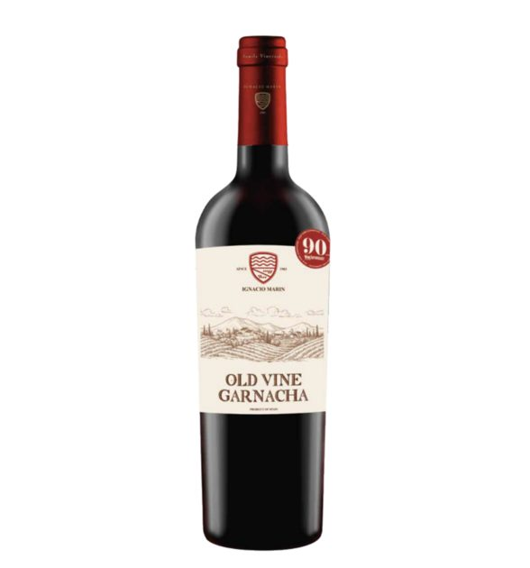

시간의 가치를 담은 레드와인
와인 명상 큐레이션 2종
기업 담당자를 대상으로 하는 '와인 명상'은 단순히 와인을 마시는 행위를 넘어, 와인이 가진 서사와 자신의 비즈니스적 가치를 연결하는 과정이 중요합니다.
기업 담당자를 대상으로 하는 '와인 명상'은 단순히 와인을 마시는 행위를 넘어, 와인이 가진 서사와 자신의 비즈니스적 가치를 연결하는 과정이 중요합니다.
와인명상을 위한 스토리가 있는 레드와인 큐레이션 2종을 제안합니다.
추천와인 1
이그나시오 마린, 올드 바인 가르나차 2015
100년 넘게 가업을 이어온 '이그나시오 마린'의 고목(Old Vine) 이야기는 비즈니스 현장에서 고군분투하는 담당자들에게 큰 울림을 줄 수 있습니다.
다음은 기업 담당자 대상 와인 명상을 위한 3가지 스토리텔링 테마입니다.

테마 1. 시간이 빚어낸 성과: 기다림과 내실의 미학
고목이 척박한 땅에서 뿌리를 깊이 내리고 천천히 열매를 맺는 과정은 기업의 장기적인 전략과 닮아 있습니다.
명상 포인트: "왜 이 와인은 50~80년이라는 시간을 견뎌야 했을까?"를 생각해보게 합니다.
스토리텔링: "급변하는 시장에서 우리는 빠른 성과에만 집착하곤 합니다. 하지만 이그나시오 마린의 올드 바인은 눈에 보이는 성장보다, 땅속 깊이 뿌리를 내리는 '보이지 않는 과정'에 집중했습니다. 여러분의 업무도 당장 드러나는 수치보다, 여러분만이 쌓아온 경험과 고유한 역량(뿌리)이 결국 가장 진한 풍미(성과)를 만들어낸다는 사실을 명상의 시간 동안 느껴보시기 바랍니다."
핵심 키워드: 근본, 본질, 지속 가능성, 깊이 있는 성장.
테마 2. 척박함을 영양분으로 바꾸는 전환의 힘
카리녜나 지역의 척박한 토양을 와인의 복합미로 승화시킨 점을 비즈니스 환경의 위기 관리 능력과 연결합니다.
명상 포인트: "가장 힘든 환경이 사실은 가장 풍부한 자양분을 줄 수 있다"는 관점의 전환.
스토리텔링: "가르나차 포도나무는 물이 부족한 척박한 환경에서 생존을 위해 더 깊숙이 뿌리를 뻗습니다. 기업 현장의 압박과 스트레스는 우리를 위축시키기도 하지만, 역설적으로 그 과정에서 우리는 더 단단한 프로페셔널로 거듭납니다. 오늘 이 와인의 스파이시한 향과 농축된 맛을 음미하며, 여러분이 겪어온 시련이 어떻게 여러분만의 '복합적인 매력(경력)'이 되었는지 돌이켜보세요."
핵심 키워드: 회복탄력성, 리프레임(Reframing), 역경 극복, 프로페셔널의 성숙도.
테마 3. 세대를 이어온 정성: 가치를 전달하는 큐레이터
100년의 역사를 지켜온 생산자의 고집과, 기업 담당자가 고객에게 전달하는 가치를 동일선상에 둡니다.
명상 포인트: "나의 일이 누군가에게 어떤 가치를 전달하고 있는가?"
스토리텔링: "이 와이너리는 1903년부터 4대째 그들의 전통을 지키고 있습니다. 이들이 고집스럽게 전통 방식을 유지한 이유는 단순히 과거를 답습하기 위함이 아니라, 이 땅이 주는 가장 진실한 맛을 고객에게 전달하기 위해서입니다. 여러분이 고객이나 파트너사에게 전달하고자 하는 그 '진심'은 무엇인가요? 여러분의 비즈니스에도 이 와인처럼 깊고 긴 여운이 남길 바랍니다."
핵심 키워드: 진정성, 사명감, 유산(Legacy), 고객 가치 창출.
💡 명상 진행을 위한 실무 팁
시각화: 와인 잔을 돌릴 때(스월링) 나오는 '레그(Legs, 눈물)'를 관찰하며, 나무가 척박한 땅에서 빨아올린 영양분이 어떻게 과실이 되었는지 상상해보도록 유도하세요.
향의 집중: 블랙체리와 감초 향이 복합적으로 올라올 때, 현재 가장 고민하는 업무의 '복잡함'을 떠올리고 그것이 해결되었을 때의 '매끄러운 타닌(부드러움)'과 같은 상태를 연상하게 하세요.
공식 정보 활용: 명상 중간이나 마무리 단계에서 위에서 정리해 드린 공식 정보(카리녜나 DO, 올드 바인의 수령 등)를 간략히 덧붙여 와인의 신뢰도를 높이세요.
와인 상세 설명 https://blog.naver.com/middaynight109/224258721975
기업 담당자들은 훌륭한 스토리텔링을 통해 와인을 접할 때, 그 와인을 단순한 음료가 아닌 '자신의 철학을 투영하는 매개체'로 인식하게 됩니다. 이그나시오 마린의 서사가 그들에게 훌륭한 쉼표가 될 것입니다.
추천와인 2
샤토 타눈다, 그랜드 바로사 까베르네 소비뇽 2020
샤토 타눈다(Château Tanunda)의 '그랜드 바로사 까베르네 소비뇽'은 1890년부터 바로사 밸리의 역사를 지켜온 '시간의 무게'와 '단단한 구조감'을 동시에 지닌 와인입니다. 기업 담당자를 대상으로 한 와인 명상에서 이 와인을 활용한다면, '변하지 않는 가치와 성장의 기초'를 중심으로 다음과 같은 스토리텔링을 구성해 볼 수 있습니다.

테마 1. 클래식의 힘: 본질을 지키는 130년의 고집
샤토 타눈다가 1890년부터 바로사 밸리의 상징으로 남아있을 수 있었던 이유는 유행에 휩쓸리지 않는 '클래식함' 때문입니다.
명상 포인트: "빠르게 변하는 비즈니스 환경 속에서도, 우리가 절대 타협하지 말아야 할 '기업의 본질'은 무엇인가?"
스토리텔링: "샤토 타눈다는 100년이 넘는 세월 동안 바로사 밸리의 아이콘 자리를 지켜왔습니다. 2020년이라는 특정 빈티지의 와인이지만, 그 안에는 지난 세기부터 쌓아온 와이너리의 철학이 녹아있습니다. 오늘 이 까베르네 소비뇽을 마시며, 여러분이 맡은 브랜드나 프로젝트가 가진 '본질'이 무엇인지, 그리고 그 가치를 어떻게 100년의 미래로 이어갈지 생각해보는 시간을 가져보세요."
핵심 키워드: 아이덴티티, 유산, 변치 않는 원칙, 전통의 힘.
테마 2. 구조감(Structure)의 미학: 탄탄한 준비가 만드는 성과
까베르네 소비뇽 특유의 촘촘한 타닌과 구조감은 잘 짜인 비즈니스 전략과 프로세스를 연상시킵니다.
명상 포인트: "나의 성과를 지탱하고 있는 내면의 구조는 얼마나 견고한가?"
스토리텔링: "이 와인의 가장 큰 특징은 바로 '구조감(Structure)'입니다. 잘 익은 과실미가 촘촘한 타닌이라는 틀 안에 안정적으로 자리 잡고 있죠. 비즈니스 또한 화려한 결과물만큼이나 이를 뒷받침하는 치밀한 준비와 시스템이 중요합니다. 입안에서 느껴지는 타닌의 질감을 천천히 느끼며, 여러분의 커리어를 지탱하는 단단한 지식과 경험의 구조를 다시 한번 점검해 보시기 바랍니다."
핵심 키워드: 전략적 구조, 준비된 역량, 치밀함, 완성도.
테마 3. 집중(Concentration)의 힘: 낮은 수확량이 주는 깊이
2020 빈티지는 낮은 수확량으로 인해 과실의 응축도가 매우 높습니다. '덜어냄'으로써 더 깊은 가치를 얻는 역설을 다룹니다.
명상 포인트: "진정으로 중요한 목표를 위해 나는 무엇을 과감히 덜어냈는가?"
스토리텔링: "까베르네 소비뇽이 이토록 진하고 깊은 풍미를 갖게 된 것은, 더 많은 포도를 수확하는 대신 나무가 에너지를 과실에 집중하도록 했기 때문입니다. 업무의 홍수 속에서 우리는 가끔 '선택과 집중'을 잊곤 합니다. 이 와인의 진한 블랙커런트 향을 음미하며, 지금 여러분의 비즈니스에서 덜어내야 할 불필요한 것들은 무엇이고, 더 집중해야 할 단 하나의 가치는 무엇인지 스스로에게 질문해 보세요."
핵심 키워드: 선택과 집중, 밀도 있는 삶, 우선순위, 정수(Essence).
💡 명상 진행을 위한 실무 팁
시각화 (삼나무 향과 다크 초콜릿): 향을 맡을 때, 삼나무(Cedar)의 향은 '흔들리지 않는 든든한 지원군'을, 다크 초콜릿의 부드러움은 '비즈니스 협상 후의 성취감'으로 연결하여 안내해보세요.
구조감 탐색: 타닌이 혀와 입안 전체를 감싸는 느낌을 '조직 내에서 나의 역할이 가진 탄탄한 비중'으로 시각화하게 하면 기업 담당자들에게 매우 직관적으로 와닿습니다.
마무리 멘트: "샤토 타눈다가 바로사 밸리의 심장이듯, 여러분도 각자의 조직에서 대체 불가능한 심장 같은 존재가 되길 바랍니다."라는 메시지로 명상을 마무리해보세요.
와인 상세 설명 https://blog.naver.com/middaynight109/224200134277
→ 샤토 타눈다, 그랜드 바로사 까베르네 소비뇽 2020
훌륭한 스토리텔링을 통해 와인을 접할 때, 그 와인은 단순한 음료가 아닌 '자신의 철학을 투영하는 매개체'로 인식됩니다. 추천드리는 와인이 명상에 참여하시는 분들께 훌륭한 쉼표가 되기를 바랍니다.
010-8078-7493 문자 주시면 가장 빠르게 안내해 드립니다.
이 글은 땡큐와인 네이버 블로그에 먼저 올린 글이에요.